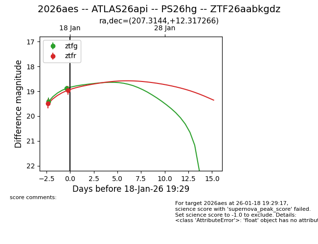
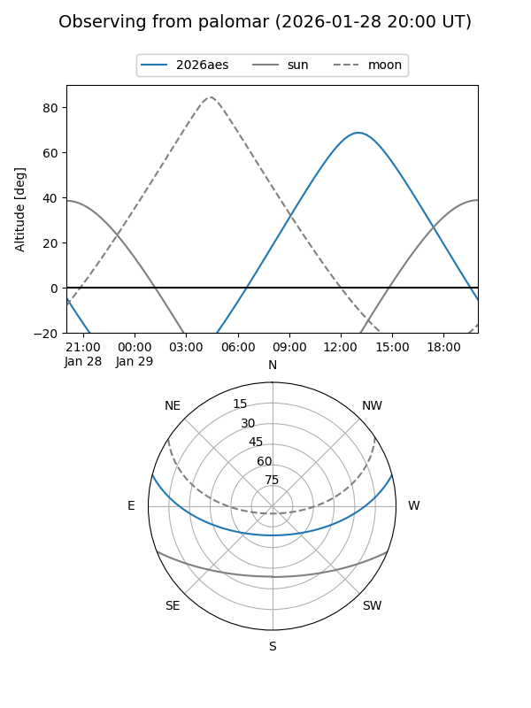
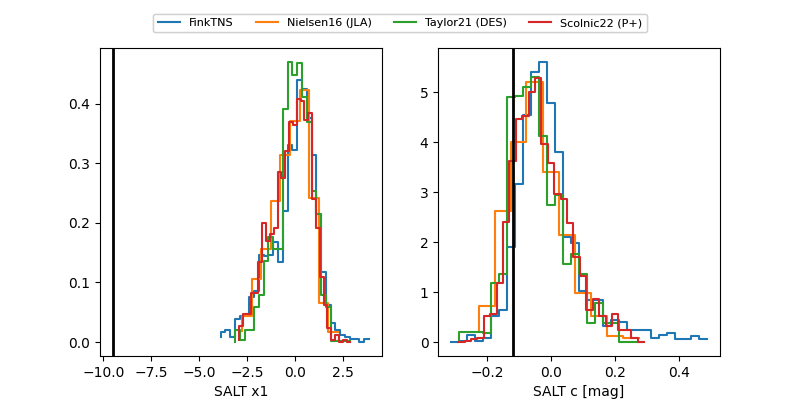

2026aes
Target 2026aes at 2026-01-17 07:10
Aliases and brokers:
FINK: link
Lasair: link
ALeRCE: link
TNS: link
YSE: link
alt names
ZTF26aabkgdz (ztf,fink_ztf)
2026aes (tns,yse)
Coordinates:
equatorial (ra, dec) = 207.3144,+12.31727
equatorial (HMS+DMS) = 13:49:15.47,+12:19:02.16
galactic (l, b) = (348.2086,+69.92591)
Flags:
Photometry:
last ztfg=19.42, ztfr=19.50
1 ztfg, 1 ztfr detections
Lightcurve

Visibility


Additional plots
